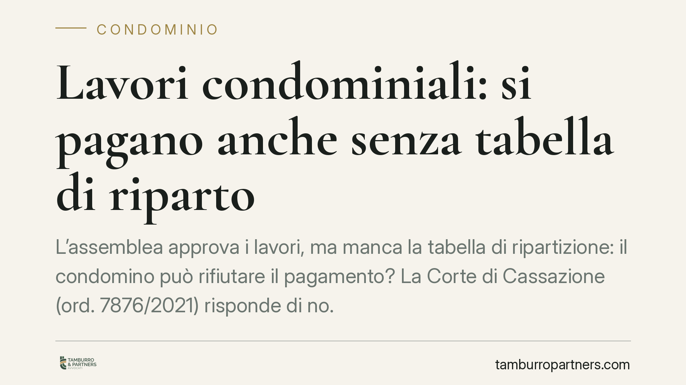

Lavori condominiali: si pagano anche senza tabella di riparto
L'assemblea approva i lavori, ma manca la tabella di ripartizione: il condomino può rifiutare il pagamento? La Corte di Cassazione (ord. 7876/2021) risponde di no. L'obbligo nasce dalla delibera che approva la spesa, non dalla successiva tabella. Vediamo cosa cambia per amministratori e condomini, e come gestire le opposizioni più frequenti.

Il caso
Un condomino si oppone al pagamento della propria quota per lavori già approvati dall'assemblea. Le ragioni: da un lato un contenzioso aperto con la ditta esecutrice, dall'altro l'assenza di una specifica tabella di ripartizione che indichi quanto spetta a ciascuno.
La Corte di Cassazione, con l'ordinanza n. 7876 del 2021, ha respinto entrambe le obiezioni. Il messaggio è netto: l'obbligo di pagamento è già sorto, e questi argomenti non lo sospendono.
Inquadramento normativo
Il riferimento è l'art. 1123 del Codice Civile, che disciplina la ripartizione delle spese condominiali. La norma stabilisce il criterio di base – la suddivisione in proporzione ai millesimi di proprietà – ma non subordina l'esigibilità del credito condominiale alla preventiva approvazione di una tabella dedicata al singolo intervento.
La Cassazione distingue due momenti che spesso vengono confusi. Il primo è la delibera di approvazione della spesa: con questo atto l'assemblea decide i lavori e ne assume l'onere economico. Il secondo è la ripartizione contabile, cioè il calcolo della quota dovuta da ciascun condomino. È il primo momento a far nascere l'obbligo. La ripartizione è un'operazione successiva e tecnica, che presuppone l'obbligazione già esistente.
Di conseguenza, finché la delibera di approvazione non viene annullata o impugnata con successo, produce effetti. E il pagamento è dovuto.
Implicazioni pratiche
Per il condomino la lezione è chiara: non si può autosospendere il pagamento. Le contestazioni vanno fatte valere nelle sedi corrette, non rifiutando il versamento.
In particolare, due argomenti molto usati non reggono:
- Il contenzioso con l'appaltatore. La controversia tra condominio e ditta esecutrice riguarda il rapporto d'appalto. È estranea all'obbligazione del singolo condomino verso il condominio, che resta autonoma. Eventuali vizi dell'opera o inadempimenti della ditta si gestiscono in quel diverso rapporto.
- La mancanza della tabella di riparto. Se la quota non è ancora stata calcolata in modo definitivo, l'amministratore può comunque procedere con la ripartizione secondo i criteri di legge e i millesimi esistenti. L'assenza di una tabella ad hoc non è una causa di non debenza.
Per l'amministratore questo significa avere un appiglio solido per la riscossione, anche quando la contabilità dell'intervento non è ancora chiusa. Resta però essenziale che la delibera a monte sia regolare e impugnabile solo nei termini di legge.
Attenzione ai limiti
La decisione non rende intoccabile qualsiasi richiesta dell'amministratore. Se la delibera di approvazione è viziata – per difetti di convocazione, mancanza di quorum o oggetto indeterminato – il condomino conserva il diritto di impugnarla nei termini previsti dall'art. 1137 del Codice Civile (trenta giorni). L'impugnazione, però, è cosa diversa dal semplice rifiuto di pagare.
Resta inoltre fermo che il credito condominiale, per essere riscosso coattivamente, richiede i presupposti di legge: la delibera approvata e lo stato di ripartizione costituiscono la base del decreto ingiuntivo che l'amministratore può richiedere.
Cosa fare in concreto
- Verificate la regolarità della delibera prima di contestare: controllate convocazione, quorum e oggetto. Se ci sono vizi, impugnate nei trenta giorni, non limitatevi a non pagare.
- Non confondete i rapporti: la lite con la ditta va portata nel rapporto d'appalto e gestita dall'amministratore, non opposta come scusa per il mancato versamento.
- Amministratori, predisponete subito la ripartizione secondo i millesimi esistenti: l'assenza di una tabella dedicata non giustifica la sospensione della riscossione.
- Documentate ogni passaggio: verbali, preventivi approvati e prospetti di riparto sono la base per un eventuale decreto ingiuntivo.
- Valutate una verifica legale se la delibera presenta criticità o se l'importo richiesto appare sproporzionato in modo dubbio rispetto ai criteri di legge.
Disclaimer
Contributo informativo a cura di Tamburro & Partners - Avv. Giuseppe Tamburro. Non costituisce parere legale.
Ogni condominio ha una storia a sé.
Se gestisci un'amministrazione e vuoi un confronto su una specifica questione condominiale, scrivi allo studio. Ti rispondiamo entro un giorno lavorativo.